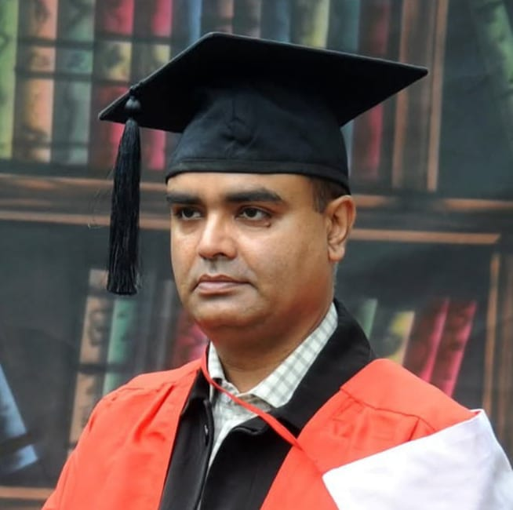
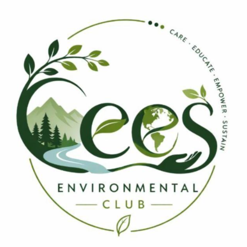
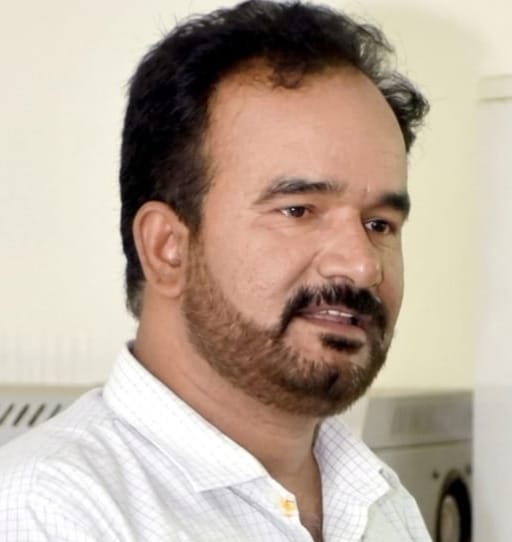
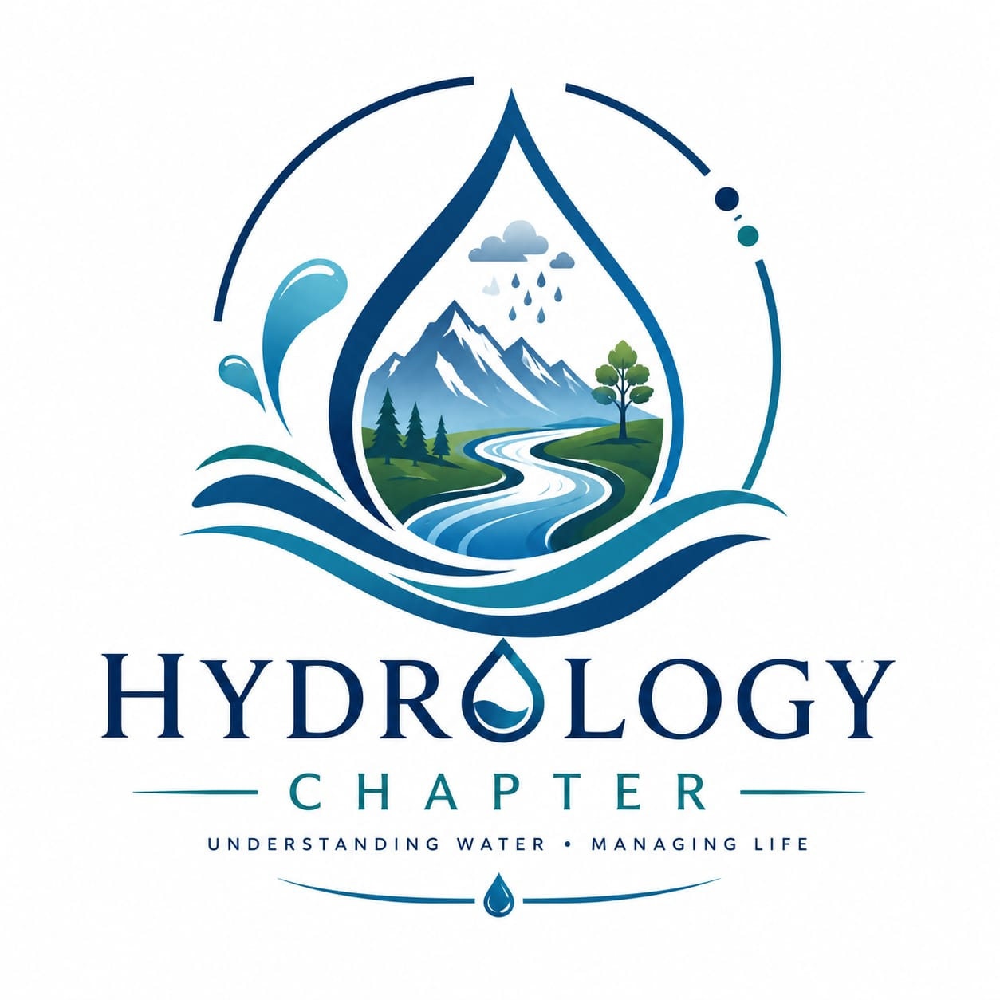
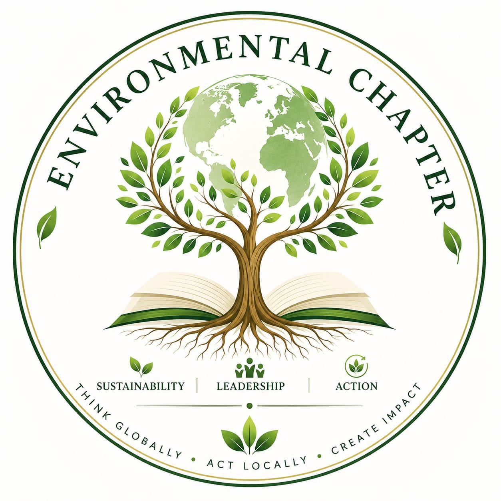

PRINCIPAL
01
Prof. Dr. Irfan Ahmad Sheikh
College of Earth & Environmental Sciences

Loading the greener side of campus
A student-led environmental community at the College of Earth & Environmental Sciences, University of the Punjab, Lahore, turning environmental awareness into ideas, action and impact.
NOT JUST ANOTHER SOCIETY.
The Environmental Club is a student-driven community of the College of Earth & Environmental Sciences, University of the Punjab, Lahore.
We create a space where students can learn about environmental challenges, exchange ideas, build skills, collaborate across disciplines and take practical action for a healthier planet. Through its three student-led chapters, the club brings together different areas of environmental learning, from hydrology and water resources to environmental sciences, tourism and hospitality management.
Explore What We Do ↗THE PEOPLE BEHIND THE MOVEMENT.
One institution, multiple perspectives, one shared planet. The Environmental Club connects the College of Earth & Environmental Sciences with student-led chapters in Hydrology & Water Resource Management, Environmental Sciences, and Tourism & Hospitality Management, turning knowledge across water, ecosystems, sustainability, and responsible tourism into ideas, conversations, and action.

College of Earth & Environmental Sciences

Environmental Club

Hydrology and Water Resource Management

Environmental Sciences
Tourism and Hospitality Management
THREE CHAPTERS. ONE MOVEMENT.
The Environmental Club brings together three student-led chapters, each offering its own perspective, ideas and opportunities for learning, collaboration and action.
Exploring water, hydrology, resources and the challenges shaping a more resilient future.
Explore Chapter ↗Connecting students with ecosystems, sustainability, climate and the environmental questions shaping our world.
Explore Chapter ↗Exploring responsible tourism, destinations, hospitality and the relationship between people, places and the planet.
Explore Chapter ↗WHAT'S HAPPENING?
From climate conversations to hands-on campus action, this is where environmental ideas become experiences.
Where Ideas Take Root. An environmental challenge combining plantation, creative problem-solving, persuasion and negotiation.
Introducing the Environmental Club, welcoming new students and formally inducting its executive and chapter teams.
CEES × UET | A collaborative science event bringing students together through science, creativity and student engagement.
Campus tours, socializing and a welcoming start for freshers.
ABOUT THE EVENT
Zero Week at CEES is designed to give freshers a welcoming start to university life. The week will provide students with time to explore the campus, become familiar with their surroundings and connect with their new classmates and seniors. Through campus tours, interactive activities and informal social gatherings, freshers will have the opportunity to meet new people, build friendships and feel at home within the CEES community before regular academic activities begin.
WHAT TO EXPECT
LIFE IN THE CLUB.
Explore the Environmental Club through events, field experiences, learning, campaigns and the moments that make our community.
GALLERY
EVENT ALBUM
HAVE AN IDEA?
For collaborations, campus initiatives, partnerships or general enquiries, connect with the Environmental Club.
YOUR PLANET NEEDS YOUR ENERGY.
Join a student community turning environmental concern into real-world action.
Join the Environmental Club ↗